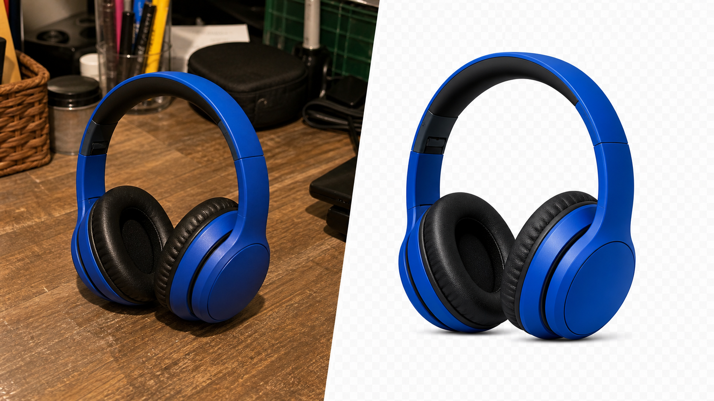

Crie PNGs transparentes para imagens de anúncio, mockups, miniaturas e materiais promocionais.
Para vendedores Etsy
Fotos Etsy mais limpas em lote
Prepare fotos de produto mais limpas para anúncios Etsy, packs e atualizações sazonais da loja. Remova fundos de várias imagens e exporte PNGs transparentes prontos para listings, publicidade e materiais da loja.

Processe várias variações, cores ou produtos artesanais numa sessão.
Descarregue uma imagem quando precisar ou receba o lote processado num ZIP.
A ferramenta foca-se numa tarefa: remover fundos rapidamente de muitas fotos de produto.
Fluxo Etsy
Crie imagens reutilizáveis para listings e promoções
O BatchCutout ajuda vendedores Etsy a transformar fotos de produto em PNGs transparentes reutilizáveis para anúncios, mockups, banners, publicações sociais e campanhas sazonais.
Use imagens de novos produtos, bundles, variações, packs ou conteúdo promocional.
Evite repetir a mesma edição manualmente quando precisa de atualizar várias imagens.
Use os recortes em listings, miniaturas, banners, mockups, anúncios e redes sociais.
Para lojas com volume
Mais útil quando há várias imagens para tratar
O plano grátis valida a qualidade. O Pro faz sentido quando o trabalho se repete todas as semanas.
| Uso Etsy | Sem fluxo em lote | Com BatchCutout |
|---|---|---|
| Novos listings | Editar cada imagem antes de publicar. | Processar várias imagens numa sessão. |
| Packs e bundles | Guardar e reencontrar ficheiros manualmente. | Exportar PNGs ou ZIP organizado. |
| Promoções sazonais | Recriar imagens para cada banner ou anúncio. | Reutilizar PNGs transparentes em vários criativos. |
Oferta Pro
Para vendedores que criam e atualizam anúncios com frequência
Entre com email, escolha o plano e o acesso Pro fica ligado à sua conta depois do pagamento Stripe.
- Plano fundador: 15 EUR/mês para os primeiros clientes.
- Até 100 imagens por lote.
- Até 2.000 imagens por mês.
15 EUR/mês
Boa opção para validar o fluxo em loja real antes de escalar volume.
Ativar plano fundadorFluxo para vendedores
Teste com produtos reais da sua loja
Use 2 imagens grátis para confirmar a qualidade antes de comprar Pro.